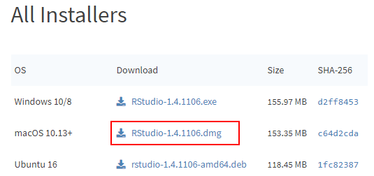
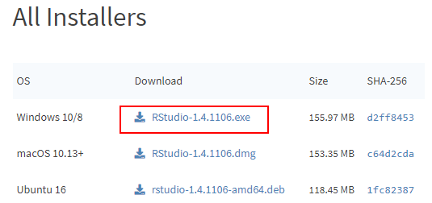
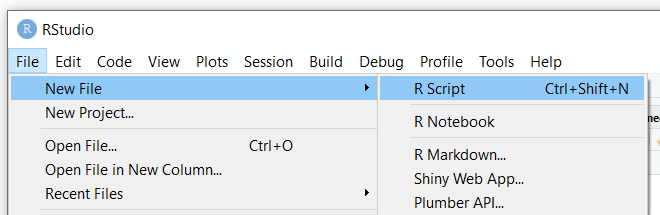
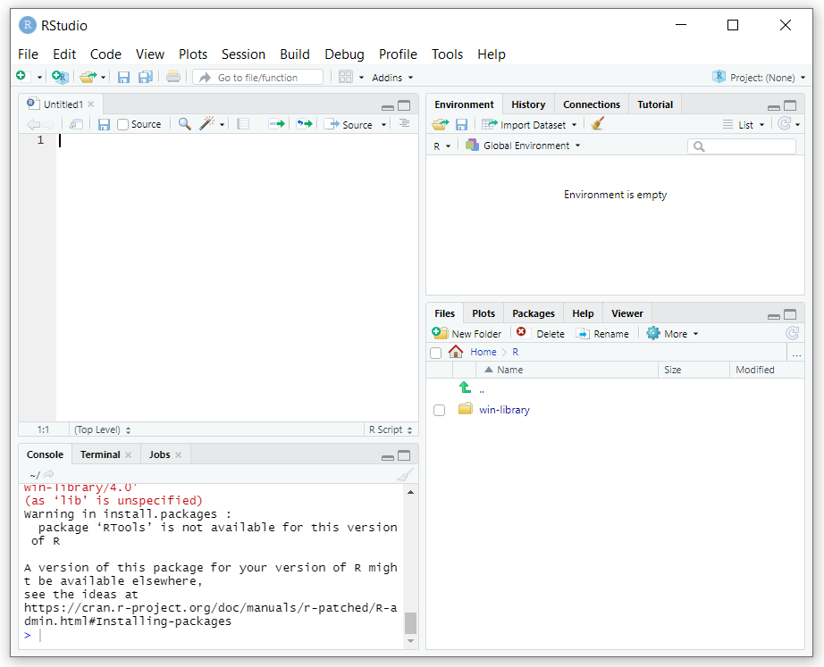

3 Week 2: R Bootcamp: Metadata I
2/3/2022 Thursday
Prepare for Class:
- Install software (instructions below):
- Read introduction and part of the first chapter of Jeffery Pomerantz’s book Metada (until p. 30)
- Complete the complete the CLI / File system exercise we started in class (see Moodle)
NB: please hand in a screenshot of the installed RStudio on your computer on Moodle, latest on Tuesday 1 February. If you have any trouble with the installation, ask us BEFORE Wednesday so we can solve any problem before the class starts.
3.1 Installing R
R is a programming language that is often used for data analysis.
It contains powerful and easy-to-use tools for statistical analysis and
creating graphs.
The next weeks, we will provide an introduction to programming with R,
geared at absolute beginners, and provide multiple usage examples for
digital humanists.
Installing R is quite straightforward. We will install it from CRAN
(The Comprehensive R Archive Network).
3.1.1 On Mac
- Before installing R, install XQuartz and XCode to avoid trouble down the line:
- follow the instructions here to download and install XQuartz
- Open Terminal, and run the following command:
xcode-select --install
- Download the latest R version: go to
cran.r-project.org/bin/macosx/
and click on the
R-4.0.4.pkglink to downloadR(the version number may be different; the website will always bring you to the link for the latest version) - click on the downloaded file to start the installation process. You can stick
with the defaults, so click every
Nextbutton until you reach the end of the installation process.
3.1.2 On Windows
- Go to https://cran.r-project.org/, and click on “Download R for Windows”
- Click “base”
- Click “Download R 4.0.4 for Windows” (the version number may be different; the website will always bring you to the link for the latest version)
- Double-click the
R-4.0.4-win.exefile (again, the version number may be different) to start the installation process. You can stick with the defaults, so click everyNextbutton until you reach the end of the installation process.
3.2 Installing RStudio
RStudio is a working environment (IDE, Integrated Development Environment) for R that allows you to write R code and execute it.
You can write R scripts in any text editor and execute them from any
command line program, but an IDE like RStudio makes writing and executing
R code much easier.
IMPORTANT: install RStudio only after you have installed R
3.2.1 On Mac
- Go to https://rstudio.com/products/rstudio/download/#download
- Click the
DOWNLOAD RSTUDIO FOR MAC OSbutton. If this button does not appear for some reason, click the download link for the macOS 10 version.dmg filein the table below:

- Click the downloaded
RStudio-1.4.1106.dmgfile (NB: the version number may be different; the website will always bring you to the link for the latest version) to start the installation process. You can stick with the defaults, so click everyNextbutton until you reach the end of the installation process.
3.2.2 On Windows
- Go to https://rstudio.com/products/rstudio/download/#download
- Click the
DOWNLOAD RSTUDIO FOR WINDOWSbutton:
 If this button does not appear for some reason, click the download link for the
Windows 10/8 version
If this button does not appear for some reason, click the download link for the
Windows 10/8 version .exe file in the table below:

- Double-click the downloaded
RStudio-1.4.1106.exefile (NB: the version number may be different; the website will always bring you to the link for the latest version) to start the installation process. You can stick with the defaults, so click everyNextbutton until you reach the end of the installation process.
3.3 The RStudio interface
- Open RStudio
- in Windows: click the
Startbutton at the bottom left of your screen, type “RStudio” and click on the RStudio App button that appears: - on Mac: click RStudio in your
Applicationsscreen
RStudio icon (on Windows)
- The interface should look more or less like this:
RStudio interface (on Mac)
The interface contains three panes:
- On the left, you will find the Console pane , which allows you to write and
execute code interactively, just like in a command-line program.
Note that the prompt in RStudio looks like
>, not like$. - On the top right, you will find the Environment pane, which will show you
the
Robjects in your current project, and a history of the most recent commands you executed in the console pane. - On the bottom right, you will find the Files pane, where you can select
files to open with RStudio. This pane also contains tabs for displaying graphs
you create in RStudio, Help information for using R and different packages
(i.e., extensions of the
Rlanguage), etc.
You can mimimize and maximize each pane using the minimize and maximize buttons
in each pane:
RStudio minimize and maximize buttons
The console pane allows you to write code interactively: after every line you
write, R will execute (run) that line once you hit the Enter key.
Sometimes it may be useful to write multiple commands and then execute these
at once. Such a series of commands is called a script and is saved in a
text file with the extension .r (e.g., hello_world.r). One of the main advantages
of saving your commands in a script is that you can re-run the same series of
commands whenever you wish.
You can write a script in any text editor; but RStudio also contains a script editor that offers additional functionalities: an autocomplete function, a button for executing your script, a debugger to help you find mistakes in your scripts, etc.
In order to start writing a script in RStudio, choose File > New File > R Script
in the menu (or use the Ctrl+Shift+N shortcut):

This will open up a fourth pane in the RStudio window, called the source pane:
